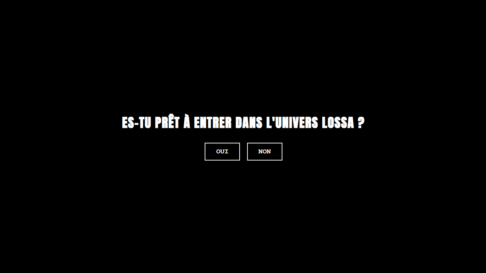
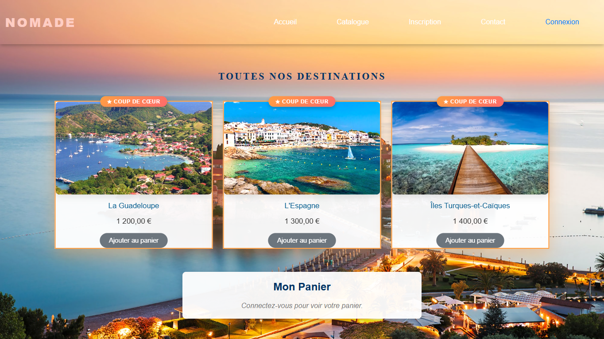

Eben Mukokeshi Mukandila
Étudiant en BTS Services Informatiques aux Organisations, option Systèmes & Réseaux (SISR), au Lycée Parc des Loges à Évry. Ce portfolio présente mon parcours, mes compétences techniques et mes réalisations.

Qui suis-je ?
Présentation
Je m'appelle Eben Mukokeshi Mukandila, étudiant en BTS Services Informatiques aux Organisations (SIO), option SISR (Solutions d'Infrastructure, Systèmes et Réseaux), au Lycée Parc des Loges à Évry. Je m'intéresse à l'administration système, aux réseaux et au développement web. Je parle français (courant), lingala (courant) et anglais (intermédiaire).
Centres d'intérêt
- Technologie & Réseaux
- Musique
- Sport
Formation & compétences
Mon parcours scolaire et mes compétences techniques
Langages
Bases de données & Cloud
Outils & systèmes
Formations
BTS Services Informatiques aux Organisations — option SISR
Baccalauréat technologique
Diplôme en langue française
Expériences
Technicien Proxi — Stage
- Configuration de postes : accueil des nouveaux arrivants, mise en place des ordinateurs portables
- Gestion des tickets via Service-Now (incidents et demandes des collaborateurs)
- Enrôlement et activation de badges collaborateurs
- Préparation de salles de réunion
Terminale — Projets web & bases de données
- Création de sites en HTML
- Modélisation et gestion de bases de données relationnelles, requêtes SQL
Mon projet professionnel
À l'issue de mon BTS SIO option SISR, je souhaite poursuivre vers un métier d'administrateur systèmes et réseaux, en m'appuyant sur les compétences acquises en stage (Active Directory, support informatique) et en formation (réseaux, bases de données, développement web).
Stages & projets
Travaux réalisés en stage et en projet personnel
Stage BNP Paribas — Support IT / Technicien Proxi
Contexte : stage en entreprise au sein du desk support IT.
Besoins : assurer le support de premier niveau et la gestion du parc informatique des collaborateurs.
Langages / outils : Active Directory, Service-Now, Open Trust CMS, Microsoft Teams.
Travail réalisé : configuration de postes pour les nouveaux arrivants, traitement d'incidents et de demandes via Service-Now, enrôlement de badges, préparation de salles de réunion.

LOSSA — Plateforme e-commerce sécurisée
En coursContexte : création d'une boutique en ligne interactive avec authentification et paiement.
Technologies : HTML, CSS, JavaScript, Supabase (Auth & BDD), API Flutterwave.
Fonctionnalités :
- Gestion des produits et comptes utilisateurs via Supabase.
- Authentification sécurisée requise pour l'accès au panier et à la commande.
- Tiroir panier dynamique avec calcul des frais de livraison selon la zone géographique.
- Paiement sécurisé intégré via Flutterwave (cartes bancaires et Mobile Money).

NOMADE — Site web dynamique de voyage
TerminéContexte : conception d'un site de réservation de voyages et de circuits.
Technologies : HTML, CSS, PHP, SQL.
Fonctionnalités : catalogue dynamique interconnecté avec une base de données MySQL, recherche de destinations, gestion des sessions et ajout d'offres au panier.
Dossier de veille technologique
Suivi régulier de sujets liés à mon domaine (SISR) — à mettre à jour tout au long de l'année
Sujet de veille n°1 — Sécurité de l'Active Directory
Suivi des vulnérabilités et bonnes pratiques de durcissement liées à Active Directory.
Sujet de veille n°2 — Cybersécurité réseau
Suivi des menaces réseau courantes et des outils de détection/protection.
Dossier de veille juridique
À construire avec ton professeur d'EDM
Sujet proposé — Protection des données personnelles (RGPD)
Suivi de l'actualité juridique autour du RGPD dans le secteur informatique.
En dehors des cours
Technologie
Veille personnelle, développement web et réseaux.
Musique
Centre d'intérêt personnel.
Sport
Centre d'intérêt personnel.